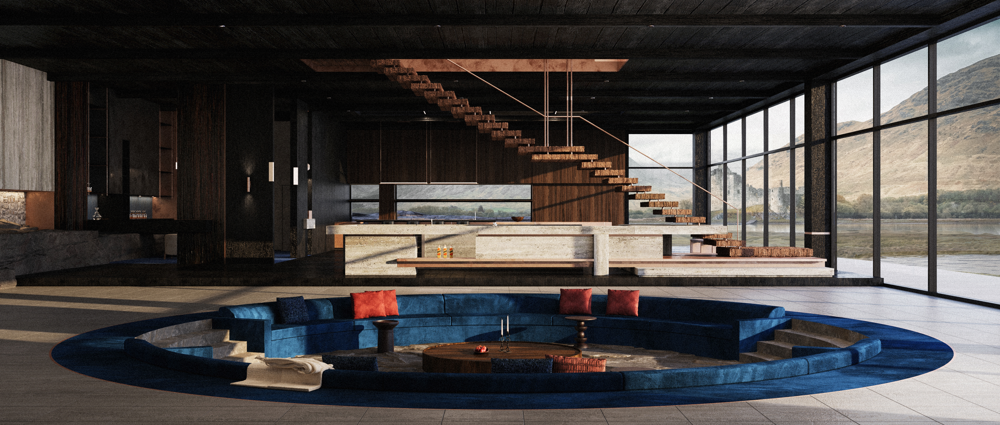
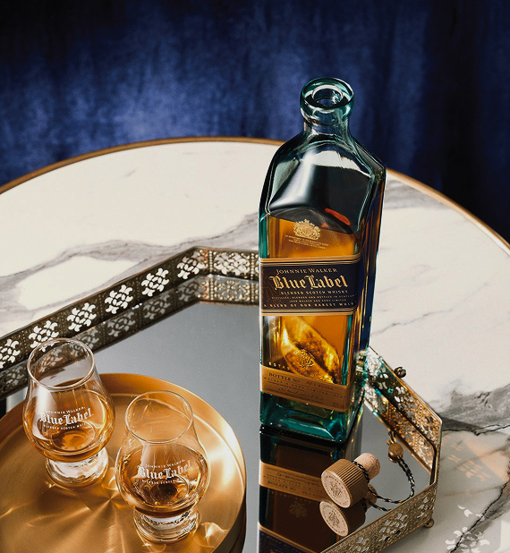
Lobby
Three trails, one for each landscape.
Each stay begins with a trail.
Choose the coast, the forest or the glen, and the room, the label and the day are set around it.


Dining
A single long timber table runs the length of the room, ending on a
raw Highland boulder.
Floor-to-ceiling glass opens the room to the loch and the mountains, and a skylight brings in the
morning light.
Guests eat here together at breakfast and dinner, as travellers once did at an inn.


Blending Room
A private room for blending your own whisky with our blender.
Backlit shelves of malts face a single counter of dark timber and stone, set for one guest at a
time.
The room is kept dim and quiet so the focus stays on taste, and your finished bottle is sent to
your home after your stay.


Hiking Room
Where the trail ends.
The first room you enter on your return. Take off your boots, hang your jacket and leave your pack
in a locker marked
with your room. Overnight, everything is dried, cleaned and made ready for
the next morning’s trail.
The Pause
Between the Hiking Room and the wellness area, a quiet lounge to sit down and wait for your treatment. Warm walls and soft seating mark the change from the cold of the trail to the calm of the inn.

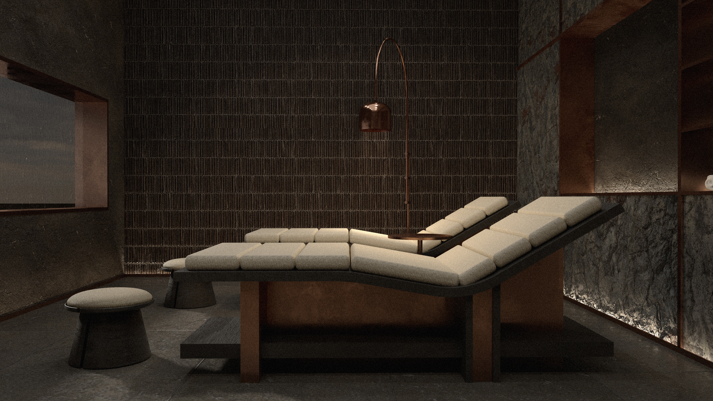
Wellness
Layered stone walls, lit from below, recall the strata of the
Highland ground outside.
Two reclining loungers follow the shape of the body, so tired legs are raised and the back can
rest.
Here guests receive the foot massage and whisky aroma therapy before dinner.
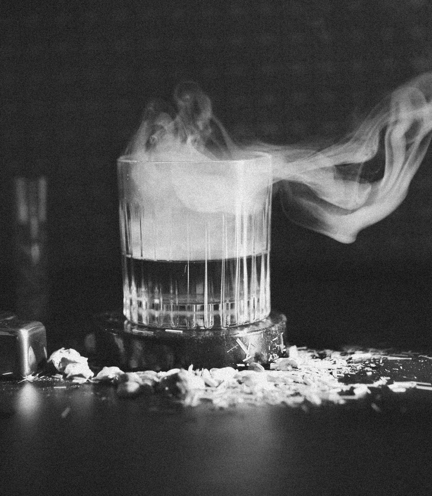
Warm stones and oil ease tired muscles,
so you walk into dinner lighter than you walked off the trail

Lounge
A low, dark room under a skylight, where guests gather after
dinner.
Deep blue sofas sit around the centre, and backlit shelves of whisky line the walls.
It is the place for a last glass, a quiet conversation or a game, before the day ends.
A single chair beneath the skylight, set apart from the room.
Read a book or look up at the sky with a glass of whisky.
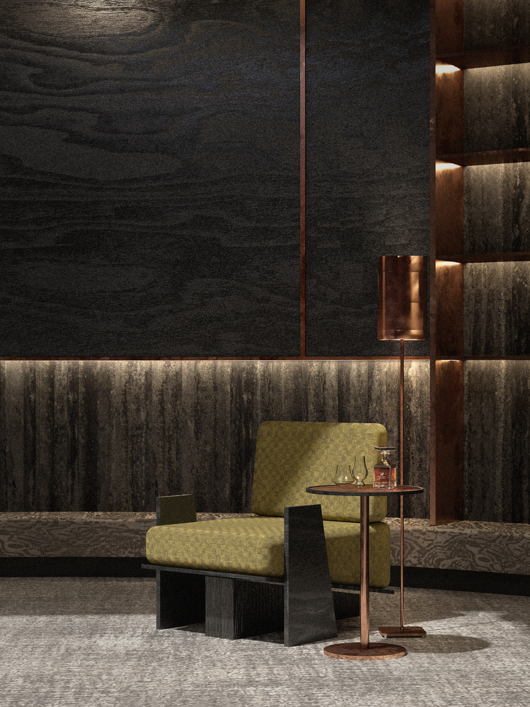
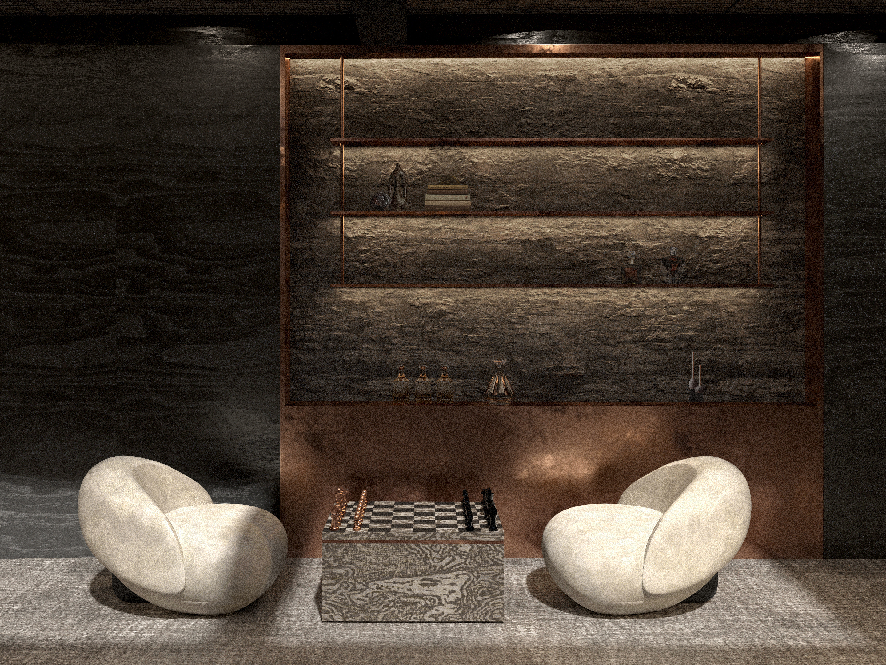
Two chairs by the backlit shelves, set for a game of chess and a slow glass.
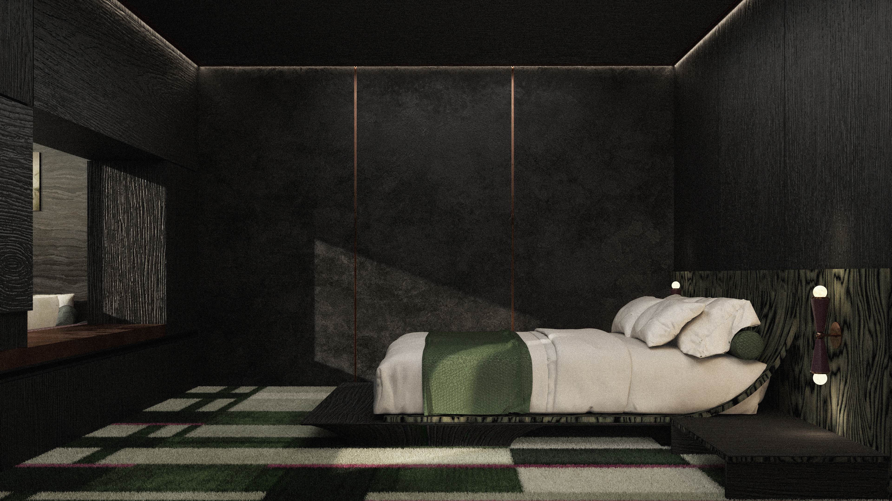
Rooms
A room for each trail.
Each trail has its own room, and each room takes its colour and materials from that landscape.
Dark walls keep the rooms quiet, so the view and the colour of the trail stand out.
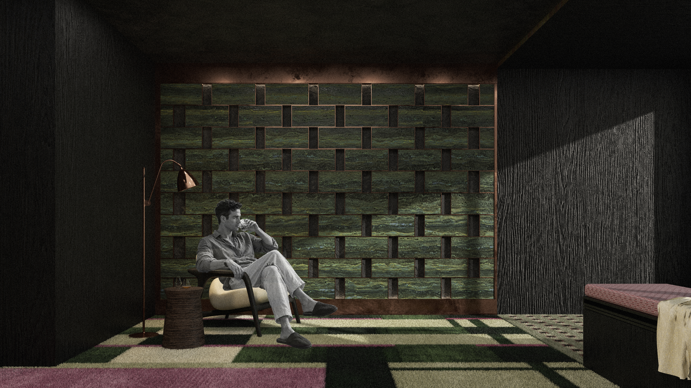
The Forests · Green Label
The room for guests of the forest trail. Woven timber in deep green lines the wall, after the moss-covered oaks of Ariundle, and the carpet carries the same greens across the floor. The colours come from the forest you walked and from the Green Label waiting for you that night.
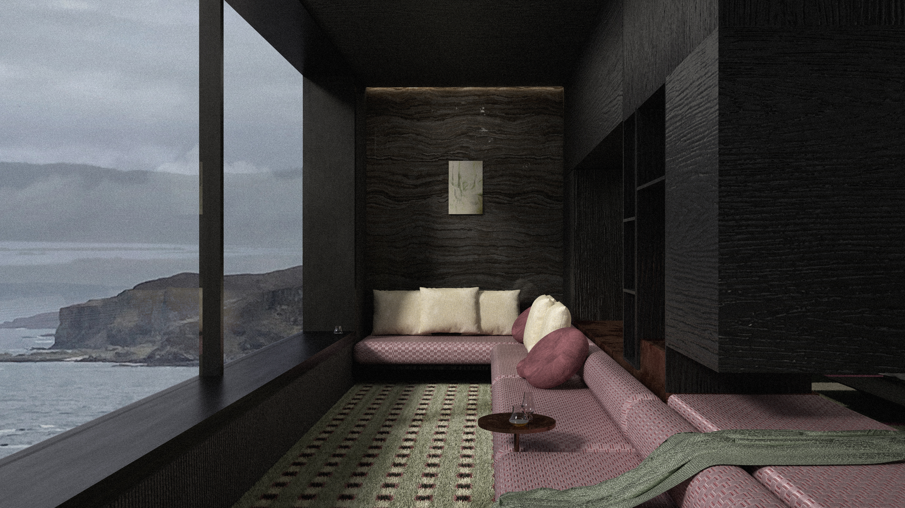
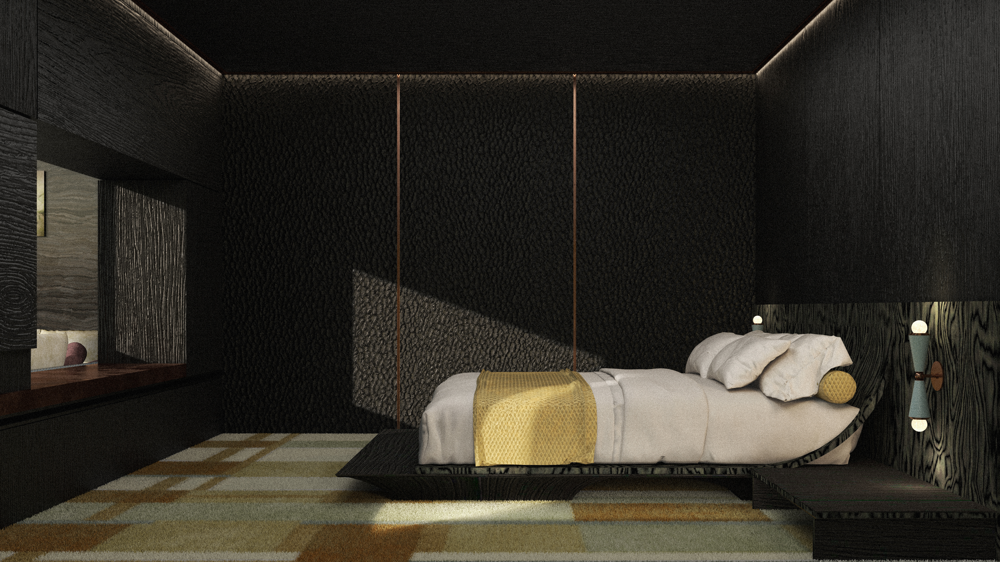
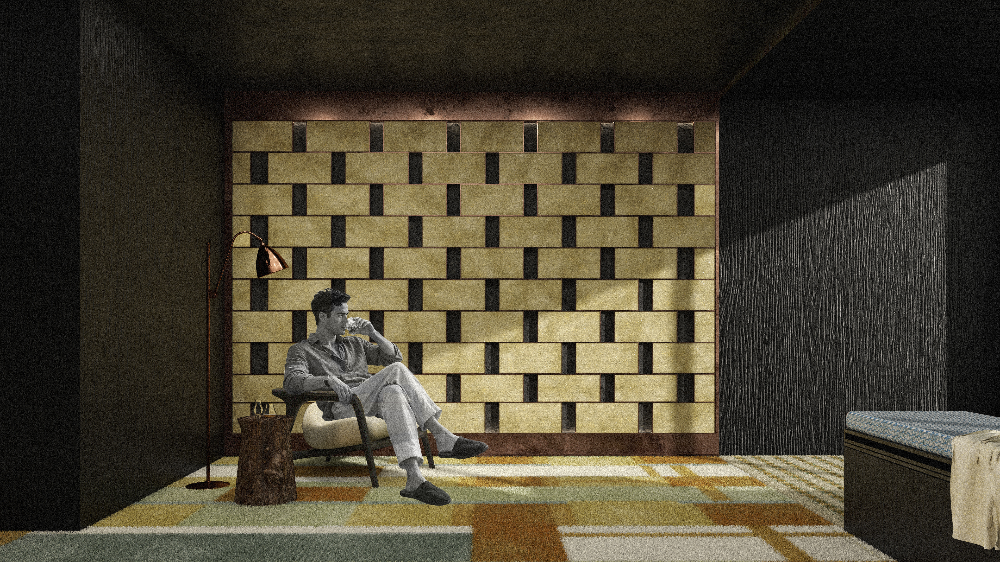
The Glens · Yellow Label
The room for guests of the glen trail. Stone and warm gold tones fill the room, after the rock walls and grassland of Glen Coe’s hidden valley. The colours come from the valley you climbed into and from the Gold Label waiting for you that night.
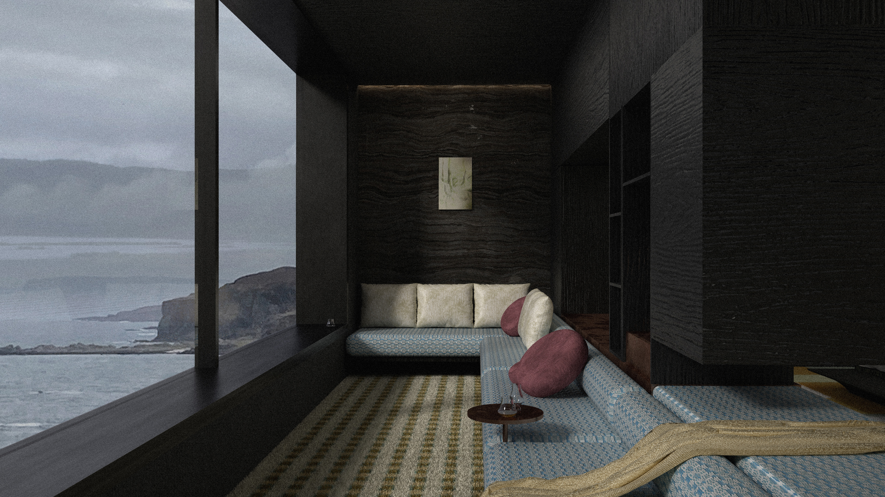

The Cliffs · Red Label
The room for guests of the cliff trail. Lines of deep red run across the floor, and a screen of red-veined stone stands by the desk, after the cliffs of Ardnamurchan at the end of the day. Dark timber keeps the room quiet, so the window and the red of the Red Label stand out.
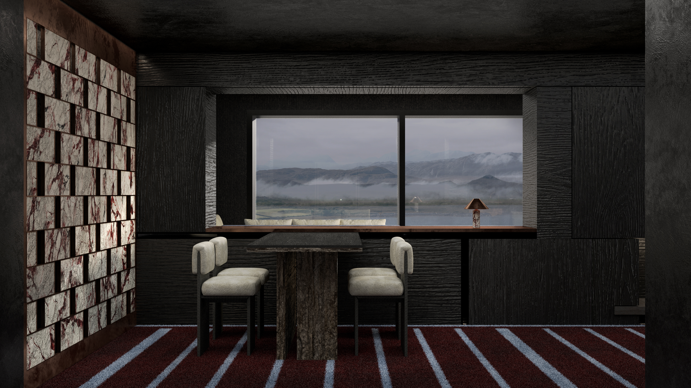